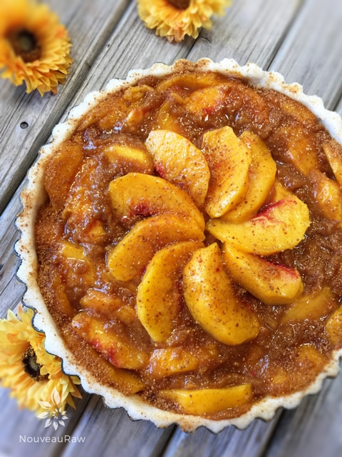
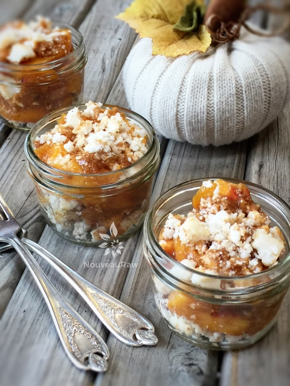
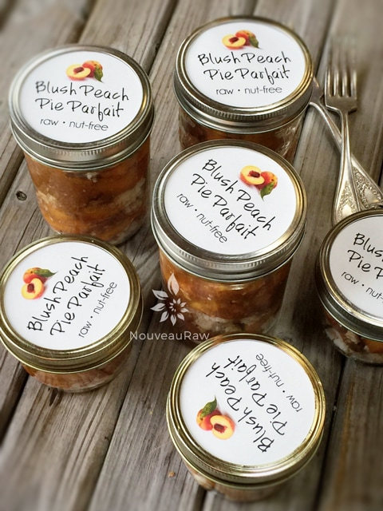

Blush Peach Pie Parfait

raw / vegan / gluten-free / nut-free
This pie turned out to be full of amazing wonders. First of all, it doesn’t require any baking or dehydration. It is raw, nut-free, vegan, grain-free, dairy-free, soy-free. I could just stop right there and do my “peach happy dance”… but wait there’s more! It is a pie that can be transformed into a parfait. I didn’t know that at first, actually not until after the photoshoot.
I was having a grand ole’ time in the kitchen, doing what I do best… creating dirty dishes. :) I could hardly wait to pull the pie out of the fridge to see how it turned out. I uncovered it and stood back, “She’s a beaut… a true beaut!” (note my English accent)
I quickly snapped a few pictures… the sun was playing hide-n-seek with the clouds which were making it challenging for taking pictures. I popped it out of the tart pan. So far so good. The crust was holding.
Now the unnerving part that comes with every pie… removing the first slice. With grace and ease, I removed the first piece of the pie. I quickly covered my eyes, counting to 22 (random lucky number), I then spread a few fingers apart so I could sneak a peek… it was holding shape!
The sun came out, so I moved quickly, I was doing my best to snap some pictures when out of nowhere a dust bunny came along, and I tripped over it (we grow big dust bunnies on the farm).
With the camera in hand, the world started to pass before my eyes far too quickly, I started to go down, but I caught myself. SHEW! I almost lost it! I lifted up my hand to find it covered in Blush Peach Pie… yep, I had caught myself alright… right dab square into the pie. My first reaction of that deer-in-the-headlight look passed after ten painstakingly long seconds; then I just started to laugh. Looking at all the blank space around me and that pie… I HAD to land right in it?! I didn’t get mad; I didn’t feel discouraged because I got a bright idea!
Parfaits! I grabbed some of my best china (mason jars)… and started to deconstruct my pie. I layered crumbled crust and peach filling into the jar creating a beautifully rustic dessert before my very eyes. Perfection at its best. Now, should you want to start off making parfaits, I would suggest skipping the whole pie making, dust bunny tripping event and go straight for the layering effect with the ingredients. Unless of course, you are in need of a great laugh and finger-licking… see photos below on the hand-in-pie process if you are intrigued by my culinary techniques. Enjoy my friends!
makes one 9-inch pie
Crust:
- 3 1/4 cups shredded coconut
- 1/4 tsp Himalayan pink salt
- 1/4 cup raw coconut butter, softened
- 6 Tbsp water
- 3 Tbsp maple syrup or your choice
Peach pie filling:
- 2 cups (385 g) organic peaches
- 6 cup (1080 g) diced organic peaches, sliced
- 3/4 cup (167 g) dried figs, soaked in water for 10 minutes and drained
- 2 Tbsp psyllium husks
- 1 Tbsp lemon juice
- 1 tsp vanilla extract
- 2 tsp Allspice
- 1/4 tsp Himalayan pink salt
Dusting:
Preparation:
Crust:
- Cover the base of the deep-dish tart pan with plastic wrap and lightly coat the edges with coconut oil. This will help with removal when you are ready to enjoy the pie.
- In a food processor, fitted with an “S” blade, combine the coconut and salt. Pulse together to mix.
- Add the coconut butter, water, sweetener, and process until the batter sticks together when pressed.
- Pile the crust in the center of the pie pan. I like to start with the edges first. Press the crust against the sides of the pan, shaping it so that its edges are flush with the rim. I made mine about 1/4” thick.
- Now press the crust down on the bottom of the pan, pressing evenly and firmly all around the bottom, making sure to press firmly where the bottom of the pan joins the sides.
- Place the crust in the freezer while you make the filling.
Peach filling:
- You can use fresh or thawed and drained frozen peaches for this pie. Fresh always being the best.
- In a food processor, fitted with the “S” blade, place 2 cups of peaches, figs, psyllium, lemon juice, vanilla, and salt. Process for 10 seconds, until well mixed and broken down to a sauce.
- If the dried figs are hard and/or tough, soak in enough warm water to cover them for about 15 minutes. Drain the water and hand-squeeze the excess water from them before adding to the food processor.
- Pour the mixture into a large bowl and add the 6 cups of sliced peaches, stirring everything together. Let rest for 15-30 minutes.
- Remove the crust from the freezer and pour the filling into the pan. Spread the mixture around evenly.
- Sprinkle the raw coconut crystals on top. It will melt as the pie sits, giving it that cooked appearance. This is optional.
- Place in the fridge overnight so it can set.
- Pie will last 2-3 days in the fridge. Make sure it is well covered to protect it from fridge odors.
The Institute of Culinary Ingredients™
- To learn more about maple syrup by clicking (here).
- Raw Coconut Crystals add a “brown sugar” flavor to a recipe. Read about it (here).
- What is Himalayan pink salt and does it really matter? Click (here) to read more about it.
- When working with fresh ingredients, it is important to taste test as you build a recipe. Learn why (here).

She trips, she falls, and hand in pie…
No problem Parfait anyone?!


© AmieSue.com